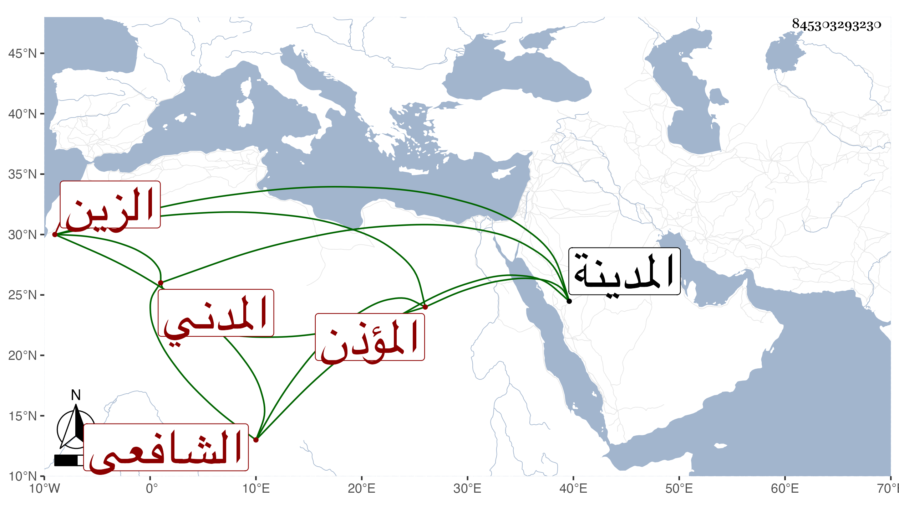

0902Sakhawi.DawLamic.ITO20230111-ara1.EIS1600.845303293230
Biography ID: 845303293230
798
علي بن الزين بن عبد الرحمن بن حسين بن حسن بن قاسم الزين المدني الشافعي المؤذن أخو إبراهيم الماضي وأبوهما ويعرف كسلفه بابن القطان . أجاز له في سنة أربع وسبعين وسبعمائة ابن أميلة وابن الهبل والصلاح بن أبي عمر والعماد بن كثير والكمال بن حبيب ومحمد بن علي بن قواليح ومحمد بن عبد الله الصفوي وغيرهم وسمع صحيح مسلم على البدر إبراهيم بن الخشاب وبعضه على الجمال الأميوطي والزين العراقي وعليه سمع صحيح البخاري وكذا عليه وعلى الزين المراغي سنن النسائي وبعضه على الجمال يوسف بن إبراهيم بن البنا والعلم سليمان السقا وأخذ العلم عن العز عبد السلام بن محمد الكازروني أخي الصفي أحمد والد الجمال محمد ومجالس من شرح ألفية العراقي عليه في سنة تسعين بالمدينة . ودرس وممن حضر دروسه في العمدة أبو الفرج المراغي وسمع عليه في مسلم والشفا وعرض عليه بعض محافيظه في سنة تسع عشرة وكذا عرض عليه حفيد شيخه الشمس محمد بن عبد العزيز الكازروني وآخر من علمته عرض عليه النجم عمر بن فهد في سنة أربع وعشرين ولوالده التقي منه إجازة .
